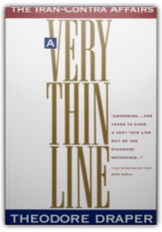

This spirited account of the exploits of a crew of Saxon archers during the Hundred Years War features cameo appearances by historical figures such as Edward III and the Black Prince. Flavorful and realistic in its depictions of medieval life, the novel combines the excitement of a rugged adventure with the romance of chivalry. 
Sir Arthur Conan Doyle wrote many more novels, stories, and works of nonfiction than the immortal tales of Sherlock Holmes. His interests, also, were broad-ranging. Conan Doyle became outraged upon learning of the abuses of human life that were committed as a result of Belgian King Leopold II's efforts to conquer and strip the Congo of its natural resources. In little more than a week in 1909, he documented the human rights abuses in The Crime of the Congo. Two of the reformers who led the effort to stop the carnage in Africa were Edmund Dene Morel and Roger Casement, upon whom Conan Doyle based the characters of Edward Malone and Lord John Roxton in The Lost World. Although these two were later discredited, and Conan Doyle repudiated them, his involvement with the tragedy of the Belgian Congo not only influenced The Crime of the Congo, but also his classic, The Lost World.

A Very Thin Line: The Iran-Contra Affairs
Theodore Draper
Despite the publicity given to the Iran-Contra Affair, most of the story has never been told—until now. This fully documented, often bizarre tale of sheer incompetence and conspiratorial malfeasance affords insights into how the government actually works for. 
“A brilliantly conceived adventure into another time” (San Francisco Chronicle) by critically acclaimed author Umberto Eco. 
The production of this play established David Edgar as a major playwright, one of the most important of the young generation of dramatists to emerge out of the 'portable' theatre movement of the late sixties. 
When world-class biblical scholar Bart Ehrman first began to study the texts of the Bible in their original languages he was startled to discover the multitude of mistakes and intentional alterations that had been made by earlier translators. In Misquoting Jesus, Ehrman tells the story behind the mistakes and changes that ancient scribes made to the New Testament and shows the great impact they had upon the Bible we use today. He frames his account with personal reflections on how his study of the Greek manuscripts made him abandon his once ultraconservative views of the Bible.
250 copy limited edition in slipcase. |
This never-before-translated masterpiece—by a heroic best-selling writer who saw his life crumble when he wouldn’t join the Nazi Party—is based on a true story. 
When "The Great Gatsby" was first published in 1925, it did not appear exactly as Fitzgerald had intended. This is the fully authorized text with notes by Fitzgerald biographer, Matthew J. Bruccoli.
In 1798, Irish patriots, committed to freeing their country from England, landed with a company of French troops in County Mayo, in westernmost Ireland. They were supposed to be an advance guard, followed by other French ships with the leader of the rebellion, Wolfe Tone. Briefly they triumphed, raising hopes among the impoverished local peasantry and gathering a group of supporters. But before long the insurgency collapsed in the face of a brutal English counterattack.
First published in 1935, C.S. Forester's classic romantic adventure is a tale of opposites attracted. Allnut and Rose, a disreputable Cockney and an English spinster missionary, wend their way down a river in Central Africa in a rickety, asthmatic steam launch, and are gradually joined together in a mission of retaliation against the Germans. Fighting time, heat, malaria and bullets, the two have a dramatic rapprochement before the explosive ending of the book. This tale of unlikely love is thrilling and funny and ultimately satisfying.
Tariq Ramadan is a global phenomenon. A Swiss-born Muslim activist, he is the grandson of the founder of the Muslim Brotherhood, the radical group credited with inspiring modern Islamic radicalism. Ramadan is fluent in English, French and Arabic. In Europe, he is the most quoted and circulated writer on Islam. His writings are a regular feature of major English-speaking newspapers, but his real message is revealed in his speeches to Muslim groups in France, Africa, and the Middle East. Caroline Fourest has carefully transcribed and translated those speeches and shows that Ramdan's ingenious rhetoric is a Trojan horse, fostering the anti-Semitic and anti-Christian values of fundamentalist Islam on its latest battlefield: Western civilization.
This volume provides a critical assessment of the wide spectrum of Hayek's celebrated work as economist and social philosopher. Included are papers on Hayek's early writings in the field of monetary economics, on which his later campaign against inflation, his controversial proposal for competing currencies, and his negative view of the impact of trade unions on the economy are based. Hayek's social philosophy, often regarded as the centre piece of his famous work, and the fundamental findings about human thinking, society, the market system and social rules of conduct it is based on, is evaluated by leading contemporary social philosophers. The volume leaves little doubt as to the considerable impact of Hayek's thinking on economic policy and social philosophy.
“Readable and reliable . . . [Gilmour’s] assessment of the political background of Kipling’s writings is exemplary.” —Earl L. Dachslager, Houston Chronicle |
 Made with Delicious Library
Made with Delicious Library